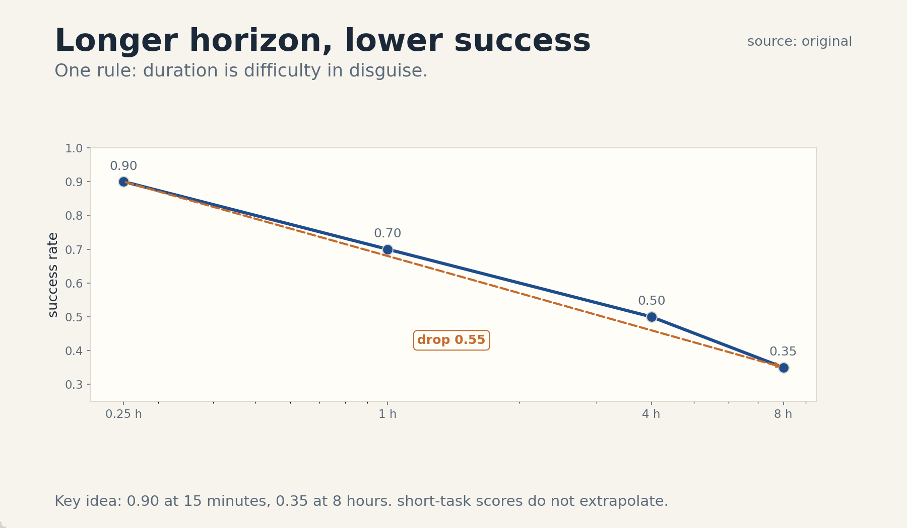
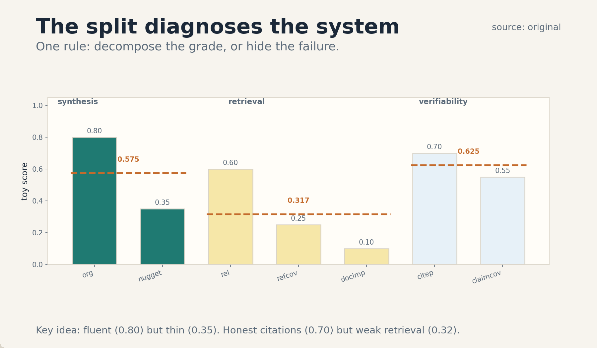
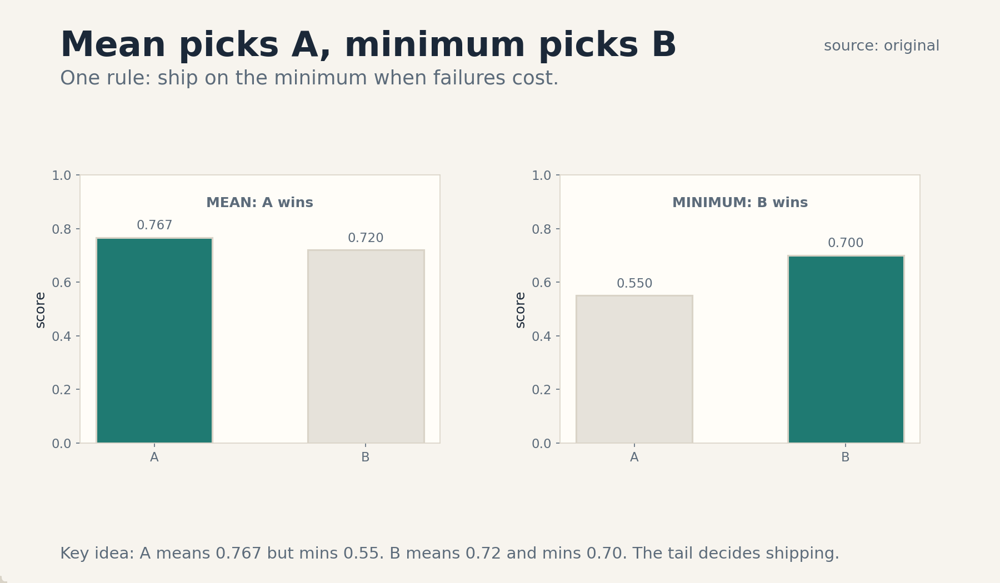

U08 · Long-horizon evaluation and research projects
U08 , Long-horizon evaluation and research projects
Course: Stanford CS329A, Autumn 2025. Official session 17 (Nov 17), Agentic Evaluations and Long-Horizon Tasks. Baseline: 2026-10-07.
Claim class: mechanisms are taught from the requested inventory with SOURCE
ATTRIBUTION PENDING. Benchmark names come from the verified official
schedule (see ../source_manifest.md). No paper contents were individually
inspected by this builder. Toy numbers are computed and traceable. No
benchmark numbers are claimed.
Unit objectives
After this unit the learner can: use task duration as a difficulty axis, value tasks economically, read GDPVal and DeepScholar-Bench at mechanism level, separate success from reliability, apply a stopping rule, detect judge contamination, budget an evaluation, run ablations, plan project milestones, report negative results, and list open questions.
Dependencies
P07 (estimation, uncertainty), P22 (experimental method), P24
(production ML, stakeholders). Local remediation is inside C05 and
C06. The shared bridges live at ../shared/prerequisites/.
Four-way link used in this unit
Intuition: a benchmark is a contract: it says what counts, who judges, and what it costs. Equation: value = hours saved times hourly rate, reliability = worst case not the mean. Code: a loop that stops when the marginal gain falls below the cost. Observation: long tasks break agents that ace short ones, and the judge is part of the apparatus, not above it.
C01 task duration
1. Source mapping, scope, objectives, dependencies. Session 17, Agentic Evaluations and Long-Horizon Tasks. Scope: duration as the x-axis of difficulty. Objective: plot the toy duration-success curve. Dependencies: P07.
2. Motivating question and tiny toy. Question: the agent scores 0.90 on 15-minute tasks. What about 8-hour tasks? Toy: 0.25 h -> 0.90, 1 h -> 0.70, 4 h -> 0.50, 8 h -> 0.35. Success decays with horizon.
3. Plain-language mental model. Duration is difficulty in disguise. A longer task needs more steps, and every step can fail. More context to hold, and more chances to drift. More decisions, and more error that compounds. The curve (success versus hours) is the honest report card: one number per horizon, not one number for all.
4. Variables, units, shapes, assumptions. Task duration d in hours. Success rate s(d). The curve is decreasing in d. Assumptions: tasks at each duration are comparable in kind, success is binary per task, the agent is fixed.
5. Justified derivation or mechanism. The mechanism is compound failure: with per-step success q and n steps, task success is about q^n. Longer tasks have larger n, so success falls exponentially even when q is constant. This is why short-task scores do not extrapolate: the curve’s shape is set by the step count, not by the agent’s cleverness.
6. Computed numerical example using the same objects. Toy: (0.25, 0.90), (1, 0.70), (4, 0.50), (8, 0.35). Drop from 15 minutes to 8 hours: 0.55 absolute, more than half the score. Per doubling of duration past 1 h, success falls about 0.15-0.20. The curve says: this agent is a 1-hour agent, not an 8-hour agent.
7. Algorithm and original minimal implementation.
def duration_curve(results):
# results: list of (hours, success_bool)
by_h = {}
for h, ok in results:
by_h.setdefault(h, []).append(ok)
return {h: sum(v) / len(v) for h, v in by_h.items()}
8. Correctness checks and expected output. Check: the curve falls. Check: the toy points are (0.25, 0.90), (1, 0.70), (4, 0.50), (8, 0.35). Check: each point has enough tasks to be stable.
9. Complexity, memory, statistical efficiency, stability, practical costs. Long tasks cost more to evaluate (8 h each). Few long tasks mean noisy points: the 8 h point needs the most tasks and gets the fewest. Stability: report CIs per point.
10. Nearest alternatives and precise selection boundaries. Single success number: pick never for agents, it hides the horizon. Step-count axis: pick when steps are countable. Duration axis: pick when wall time is the cost.
11. Failure case, broken assumption, counterexample. Break comparability: the 8 h tasks are a different kind (research) from the 15 min tasks (QA). The curve then mixes kinds, not horizons. Counterexample: an agent with perfect memory and no drift: the curve is flat, duration is not difficulty for it.
12. Research reading and falsifiable extension. Reading: long-horizon eval design (SOURCE ATTRIBUTION PENDING). Extension: hypothesis: the decay is exponential in steps. Falsification: a flat curve on matched task kinds.
13. Breadth recall, deep oral ladder, unfamiliar transfer. Recall: define the duration curve. Ladder: define the axis, run the toy, justify compounding, code the curve, state the eval cost, compare with a single number, debug the mixed-kind failure, critique binary success, design the decay experiment. Transfer: the same curve describes human task performance over shift length.
14. Lab/exercises with answers separated.
E1.1: compute the absolute drop from 0.25 h to 8 h. E1.2:
explain compounding in two sentences. E1.3: name the
mixed-kind failure. Answers: ../keys/u08_answers.md.
15. Visual units, provenance, accessibility, audit rows.
PNG ../visuals/u08_fig01.png: the 4 toy points with the
decay, one rule: longer horizon, lower success. Source:
original. Alt text: four points falling from 0.90 to 0.35
across 0.25 to 8 hours. Logged in ../visual_audit.md.

C02 economically valuable tasks
1. Source mapping, scope, objectives, dependencies. Session 17. Scope: choosing tasks by economic value, not by puzzle appeal. Objective: rank three toy tasks by value. Dependencies: P24.
2. Motivating question and tiny toy. Question: which task matters more: a 2-hour task or a 30-minute task? Toy: task A: 2 h at $150/h = $300. Task B: 8 h at $80/h = $640. Task C: 0.5 h at $400/h = $200. Value ranking: B, A, C. Duration alone misranks.
3. Plain-language mental model. A task’s value is what the work is worth, not how clever it is. Value = time saved times the hourly value of that time. A benchmark of valuable tasks measures the agent against work people pay for. Puzzle benchmarks measure against work nobody does.
4. Variables, units, shapes, assumptions. Hours h, hourly rate r (USD/h), value v = h * r. Task set weighted by v. Assumptions: the rate reflects real wages, the agent’s output substitutes for the human hours.
5. Justified derivation or mechanism. The mechanism is value weighting. An unweighted benchmark treats a 5-minute puzzle and an 8-hour analysis equally. Weighting by v aligns the benchmark with deployment: the agent is scored where the money is. The derivation is the product: v = h * r, summed over the task set for the total addressable value.
6. Computed numerical example using the same objects. Toy: A: 2 * 150 = $300. B: 8 * 80 = $640. C: 0.5 * 400 = $200. Total: $1,140. B is 56 percent of the value. An agent that aces A and C but fails B captures $500 of $1,140, only 44 percent, despite winning 2 of 3 tasks.
7. Algorithm and original minimal implementation.
def task_value(hours, rate):
return hours * rate
def value_capture(results):
# results: (value, agent_ok)
total = sum(v for v, _ in results)
got = sum(v for v, ok in results if ok)
return got / total
8. Correctness checks and expected output. Check: the toy values are 300, 640, 200. Check: value capture for the A+C agent is 500/1140 = 0.44. Check: task count (2/3) disagrees with value (0.44).
9. Complexity, memory, statistical efficiency, stability, practical costs. Valuing tasks needs wage data and expert judgment. Rates drift. Re-value yearly. Stability: the ranking is only as honest as the rates.
10. Nearest alternatives and precise selection boundaries. Puzzle benchmarks: pick for capability research. Unweighted task sets: pick never for deployment claims. Value-weighted tasks: pick when the question is economic.
11. Failure case, broken assumption, counterexample. Break substitution: the agent’s output needs 2 hours of expert review per task. The “saved” hours are fiction. Counterexample: a task with no market rate (a new kind of work): value is undefined, use task counts with a warning.
12. Research reading and falsifiable extension. Reading: GDPVal design (C03). Extension: hypothesis: value-weighted rankings differ from count rankings. Falsification: identical rankings.
13. Breadth recall, deep oral ladder, unfamiliar transfer. Recall: define task value. Ladder: define the product, run the toy, justify weighting, code the capture, state the valuation cost, compare with counts, debug the review-cost failure, critique the rates, design the ranking experiment. Transfer: the same weighting prices a product feature list.
14. Lab/exercises with answers separated.
E2.1: rank the toy tasks and compute value capture for the
A+C agent. E2.2: explain value weighting in two sentences.
E2.3: name the review-cost failure. Answers:
../keys/u08_answers.md.
15. Visual units, provenance, accessibility, audit rows.
Table plate in the lesson (item 6: task, hours, rate, value).
No separate PNG. Logged in ../visual_audit.md.
C03 GDPVal
1. Source mapping, scope, objectives, dependencies. Session 17. Reading pointer: GDPval: Evaluating AI Model Performance on Real-World Economically Valuable Tasks (SOURCE ATTRIBUTION PENDING). Scope: the benchmark’s design, not its scores. Objective: describe the task pipeline and the metric. Dependencies: C02.
2. Motivating question and tiny toy. Question: how do you test an agent on real professional work? Toy pipeline: experts (average 14 years of experience) write tasks from 44 occupations across 9 sectors. The agent and a human expert each produce the deliverable. Blinded experts compare them pairwise.
3. Plain-language mental model. GDPVal treats the agent like a job candidate. The tasks are real deliverables (briefs, analyses, plans), not puzzles. The judge does not know which work is the machine’s. The score is a win rate: how often the agent’s deliverable is preferred over the human expert’s. A public gold subset (220 tasks) anchors the leaderboard. A larger held-out set keeps it honest.
4. Variables, units, shapes, assumptions. Task: (occupation, sector, deliverable spec, materials). Judgment: blinded pairwise comparison, one human-hour per comparison (design parameter). Metric: win rate vs the human expert. Assumptions: experts judge fairly, the gold set represents the whole, the held-out set stays hidden.
5. Justified derivation or mechanism. The mechanism is blinded expert comparison at scale. It works because the tasks are the work itself: no proxy metric, no multiple choice. Blinding removes the judge’s bias toward (or against) machines. The gold/held-out split (C09 of U04 applied at benchmark scale) stops training to the test. The cost is the honesty: each comparison costs expert time.
6. Computed numerical example using the same objects. Toy: 1,320 tasks total, 220 gold (public), 1,100 held-out. Occupations: 44, sectors: 9. If an agent wins 660 of 1,320 comparisons, its win rate is 0.50: tied with the experts on average. The gold set alone (220) gives a noisier estimate: SE = sqrt(0.5*0.5/220) = 0.034.
7. Algorithm and original minimal implementation.
def win_rate(wins, total):
return wins / total
def se_rate(p, n):
return (p * (1 - p) / n) ** 0.5
8. Correctness checks and expected output. Check: the toy win rate is 0.50. Check: the gold SE is 0.034. Check: blinding is in the protocol.
9. Complexity, memory, statistical efficiency, stability, practical costs. Evaluation cost: expert hours per comparison times tasks. The held-out set is the expensive truth. Stability: expert disagreement needs measuring, report inter-rater agreement.
10. Nearest alternatives and precise selection boundaries. Puzzle benchmarks: pick for narrow skills. Automated grading: pick for scale, accept the bias. Blinded expert comparison: pick when the claim is “does professional work”.
11. Failure case, broken assumption, counterexample. Break blinding: the judge spots machine tells and grades the source, not the work. Counterexample: a task family where experts disagree with each other: the win rate measures taste, not quality.
12. Research reading and falsifiable extension. Reading: GDPval (SOURCE ATTRIBUTION PENDING). Extension: hypothesis: win rates differ by sector. Falsification: flat across sectors.
13. Breadth recall, deep oral ladder, unfamiliar transfer. Recall: define the pipeline and the metric. Ladder: define the task, run the toy, justify blinding, code the rate, state the expert-hour cost, compare with auto-grading, debug the unblinding failure, critique the gold size, design the sector experiment. Transfer: the same design hires humans.
14. Lab/exercises with answers separated.
E3.1: compute the toy win rate and gold SE. E3.2: explain
blinding in two sentences. E3.3: name the unblinding failure.
Answers: ../keys/u08_answers.md.
15. Visual units, provenance, accessibility, audit rows.
Table plate in the lesson (item 6: total, gold, held-out).
No separate PNG. Logged in ../visual_audit.md.
C04 DeepScholar-Bench
1. Source mapping, scope, objectives, dependencies. Session 17. Reading pointer: DeepScholar-Bench: A Live Benchmark and Automated Evaluation for Generative Research Synthesis (SOURCE ATTRIBUTION PENDING). Scope: the benchmark’s design, not its scores. Objective: name the three dimensions and compute a toy profile. Dependencies: C02.
2. Motivating question and tiny toy. Question: how do you grade an agent that writes a literature review? Toy task: given a paper’s title and abstract, retrieve from the live web and write the related work with citations. Toy scores: Organization 0.80, Nugget Coverage 0.35, Relevance 0.60, Reference Coverage 0.25, Document Importance 0.10, Citation Precision 0.70, Claim Coverage 0.55.
3. Plain-language mental model. The benchmark grades the research, not the prose. Three dimensions: Knowledge Synthesis (is it organized, does it cover the key facts), Retrieval Quality (are the sources relevant, important, and complete), Verifiability (do the citations actually support the claims). A system can write beautifully (Organization 0.80) while missing the key facts (Nugget 0.35): the split is the point.
4. Variables, units, shapes, assumptions. Dimensions: synthesis, retrieval, verifiability. Metrics: Organization, Nugget Coverage, Relevance Rate, Reference Coverage, Document Importance, Citation Precision, Claim Coverage. The task is live: the web changes, so the benchmark re-grades against fresh expert exemplars. Assumptions: the exemplars are good, the judges agree (measured), citations are checkable.
5. Justified derivation or mechanism. The mechanism is decomposed grading. One overall score would hide the failure: a fluent review with fake citations scores high on prose and zero on verifiability. The nugget method (experts list the vital facts, the grader checks coverage) makes synthesis measurable. Citation precision (each citation checked against its claim) makes honesty measurable. The live design fights staleness: fixed datasets rot, the web does not.
6. Computed numerical example using the same objects. Toy: synthesis: Org 0.80, Nugget 0.35 (gap 0.45: fluent but thin). Retrieval: Rel 0.60, RefCov 0.25, DocImp 0.10 (finds relevant stuff, misses the important works). Verifiability: CiteP 0.70, ClaimCov 0.55. Diagnosis: the system writes well and cites honestly, but its retrieval misses what matters.
7. Algorithm and original minimal implementation.
def deepscholar_profile(scores):
dims = {"synthesis": ["org", "nugget"],
"retrieval": ["rel", "refcov", "docimp"],
"verifiability": ["citep", "claimcov"]}
return {d: sum(scores[m] for m in ms) / len(ms)
for d, ms in dims.items()}
8. Correctness checks and expected output. Check: the toy synthesis mean is (0.80+0.35)/2 = 0.575. Check: retrieval mean is (0.60+0.25+0.10)/3 = 0.3167. Check: verifiability mean is (0.70+0.55)/2 = 0.625.
9. Complexity, memory, statistical efficiency, stability, practical costs. Grading needs LLM judges plus citation checks: expensive per task. Live tasks need fresh exemplars: maintenance cost. Stability: the web moves, pin the retrieval date.
10. Nearest alternatives and precise selection boundaries. ROUGE/BLEU: pick never for synthesis, they measure word overlap. Single score: pick never, it hides the failure. Decomposed live grading: pick when the claim is “does research”.
11. Failure case, broken assumption, counterexample. Break the exemplars: the expert’s vital facts are one school’s view. Nugget coverage then measures conformity, not quality. Counterexample: a perfect review of a tiny field: all metrics saturate, the benchmark says nothing.
12. Research reading and falsifiable extension. Reading: DeepScholar-Bench (SOURCE ATTRIBUTION PENDING). Extension: hypothesis: retrieval quality predicts nugget coverage. Falsification: no correlation.
13. Breadth recall, deep oral ladder, unfamiliar transfer. Recall: name the three dimensions. Ladder: define the task, run the toy, justify decomposition, code the profile, state the grading cost, compare with ROUGE, debug the exemplar failure, critique liveness, design the correlation experiment. Transfer: the same split grades human analysts.
14. Lab/exercises with answers separated.
E4.1: compute the three toy dimension means. E4.2: explain
the nugget method in two sentences. E4.3: name the exemplar
failure. Answers: ../keys/u08_answers.md.
15. Visual units, provenance, accessibility, audit rows.
PNG ../visuals/u08_fig03.png: the 7 toy metrics in 3
dimension panels, one rule: the split diagnoses the system.
Source: original. Alt text: seven bars in three groups,
synthesis, retrieval, verifiability. Logged in
../visual_audit.md.

C05 success versus reliability
1. Source mapping, scope, objectives, dependencies. Session 17. Scope: why the mean lies and the minimum tells the truth. Objective: compute the mean-min flip. Dependencies: P07 (estimation).
2. Motivating question and tiny toy. Question: agent A averages 0.767, agent B averages 0.72. Which ships? Toy: A: [0.90, 0.55, 0.85]. B: [0.72, 0.74, 0.70]. Mean picks A. Minimum picks B (0.70 vs 0.55). The ranking flips.
3. Plain-language mental model. Success is the mean. Reliability is the worst case. The mean hides the disaster task. The minimum exposes it. Deployments fail at the minimum, not the mean: one bad task type is the incident. The rule: report both, decide on the minimum when failures cost.
4. Variables, units, shapes, assumptions. Per-task scores s_i. Mean m = average. Minimum w = min(s_i). Assumptions: the task set covers the deployment mix, scores are comparable.
5. Justified derivation or mechanism. The mechanism is tail risk. Deployments see the full mix, so the realized experience is the whole distribution, and the complaints come from the tail. The mean is the right target for research (average progress). The minimum is the right target for shipping (the worst thing a user sees). The flip happens when one agent is spiky (high mean, low min) and the other is flat.
6. Computed numerical example using the same objects. Toy: A mean = (0.90+0.55+0.85)/3 = 0.7667, min = 0.55. B mean = (0.72+0.74+0.70)/3 = 0.72, min = 0.70. Mean margin: A wins by 0.047. Min margin: B wins by 0.15. If the 0.55 task is the production workload, A is a 0.55 agent wearing a 0.77 mask.
7. Algorithm and original minimal implementation.
def mean_min(scores):
return sum(scores) / len(scores), min(scores)
def rank(a, b, by="min"):
ka = {"mean": 0, "min": 1}[by]
return "A" if mean_min(a)[ka] > mean_min(b)[ka] else "B"
8. Correctness checks and expected output. Check: A (0.7667, 0.55), B (0.72, 0.70). Check: rank by mean is A, by min is B. Check: the flip is the point.
9. Complexity, memory, statistical efficiency, stability, practical costs. The minimum is noisy (one task decides it). Need enough tasks per type. Stability: report the min with its task identity attached.
10. Nearest alternatives and precise selection boundaries. Mean only: pick never for shipping. Percentile (p10): pick for a stabler tail. Minimum: pick when one bad type is the incident.
11. Failure case, broken assumption, counterexample. Break comparability: the min task is out of scope (a task the agent was never meant to do). The minimum then punishes honesty. Counterexample: identical task types: the min is just noise, the mean is the truth.
12. Research reading and falsifiable extension. Reading: reliability reporting (SOURCE ATTRIBUTION PENDING). Extension: hypothesis: p10 predicts incident rate. Falsification: no correlation.
13. Breadth recall, deep oral ladder, unfamiliar transfer. Recall: define the mean-min flip. Ladder: define the two, run the toy, justify the tail argument, code the rank, state the noise cost, compare with percentiles, debug the out-of-scope failure, critique the noisy min, design the incident experiment. Transfer: the same flip ranks job candidates (mean interviewer vs worst).
14. Lab/exercises with answers separated.
E5.1: compute both means and mins and the flip. E5.2:
explain the tail argument in two sentences. E5.3: name the
out-of-scope failure. Answers: ../keys/u08_answers.md.
15. Visual units, provenance, accessibility, audit rows.
PNG ../visuals/u08_fig02.png: mean vs min bars for A and B
with the flip, one rule: ship on the minimum when failures
cost. Source: original. Alt text: two panels, mean picks A,
minimum picks B. Logged in ../visual_audit.md.

C06 stopping
1. Source mapping, scope, objectives, dependencies. Session 17. Scope: when to stop an agent run. Objective: compute the optimal stop from marginal gains. Dependencies: P07.
2. Motivating question and tiny toy. Question: the agent improves each hour. When do you pull the plug? Toy: marginal gains per hour: h1 +0.10, h2 +0.06, h3 +0.03, h4 +0.01. Cost: $50/h. Value: 0.01 success = $20. Marginal values: $200, $120, $60, $20. Stop after h3 (the next hour earns $20, below $50).
3. Plain-language mental model. Stopping is a comparison: the next hour’s gain versus the next hour’s cost. Run while the gain beats the cost, stop when it does not. Gains shrink and give less each time. Costs stay flat. The crossing point is the answer. No crossing, no stopping rule: that is how budgets burn.
4. Variables, units, shapes, assumptions. Marginal gain g_t per step t. Cost c per step. Value per success point v. Continue while g_t * v > c. Assumptions: gains are measurable, costs are flat, the future looks like the recent past.
5. Justified derivation or mechanism. The mechanism is optimal stopping for a decreasing sequence. Total value is the sum of marginals minus the sum of costs. Adding a step with gv < c lowers the total: the step is negative-value work. The optimal stop is the last step with gv > c. The derivation is one line: argmax over prefixes of (sum gv - nc).
6. Computed numerical example using the same objects. Toy: values: h1 $200, h2 $120, h3 $60, h4 $20. Costs: $50 each. Net of stopping after h3: 200+120+60-150 = $230. After h4: 230+20-50 = $200. After h2: 320-100 = $220. The best is h3 at $230. The rule earns $30 more than running to h4.
7. Algorithm and original minimal implementation.
def optimal_stop(gains, value_per_point, cost):
best, best_t, net = None, 0, 0
for t, g in enumerate(gains, 1):
net += g * value_per_point - cost
if best is None or net > best:
best, best_t = net, t
return best_t, best
8. Correctness checks and expected output. Check: the toy returns (3, 230). Check: h4 lowers the net. Check: the rule uses the future gain, so it needs a gain forecast in practice.
9. Complexity, memory, statistical efficiency, stability, practical costs. Gains are noisy: smooth before stopping. The forecast is the hard part: use the recent slope. Stability: stop rules need hysteresis (two bad steps, not one).
10. Nearest alternatives and precise selection boundaries. Fixed budget: pick when costs are unknown. Marginal rule: pick when gains and costs are measurable. Never stop: pick never.
11. Failure case, broken assumption, counterexample. Break the forecast: a breakthrough at h5 (a big gain after small ones). The rule stops before it. Counterexample: gains are not monotone: the rule needs the argmax form, not the first-crossing form.
12. Research reading and falsifiable extension. Reading: optimal stopping (SOURCE ATTRIBUTION PENDING). Extension: hypothesis: the rule beats fixed budgets on net value. Falsification: equal nets.
13. Breadth recall, deep oral ladder, unfamiliar transfer. Recall: state the stopping rule. Ladder: define the terms, run the toy, justify the comparison, code the rule, state the forecast cost, compare with fixed budgets, debug the breakthrough failure, critique the forecast, design the net experiment. Transfer: the same rule stops a job search.
14. Lab/exercises with answers separated.
E6.1: compute the toy stop and net. E6.2: explain the rule in
two sentences. E6.3: name the breakthrough failure. Answers:
../keys/u08_answers.md.
15. Visual units, provenance, accessibility, audit rows.
Table plate in the lesson (item 6: hour, gain, value, net).
No separate PNG. Logged in ../visual_audit.md.
C07 judge contamination
1. Source mapping, scope, objectives, dependencies. Session 17. Scope: when the judge is part of the experiment. Objective: compute the contamination gap. Dependencies: P22.
2. Motivating question and tiny toy. Question: the same model judges its own outputs. Problem? Toy: same-model judge agrees with the generator’s self-score 0.85. An independent judge agrees 0.60. The gap 0.25 is contamination: shared blind spots and style preference, not quality.
3. Plain-language mental model. A judge that shares the generator’s training shares its blind spots. It rewards what it would write: the same style, the same errors, the same shortcuts. The score measures similarity to the judge, not quality of the work. The fix is distance: a different model, a different lab, a human. The gap between the near judge and the far judge is the contamination meter.
4. Variables, units, shapes, assumptions. Agreement rates a_near, a_far. Contamination gap g = a_near - a_far. Assumptions: the far judge is competent, the task set is fixed.
5. Justified derivation or mechanism. The mechanism is shared bias. The generator and the same-model judge were trained on the same data with the same objective: their errors correlate. When the judge grades, correlated errors look like agreement. The gap is the correlation made visible: it is the part of the score that comes from being alike, not from being right.
6. Computed numerical example using the same objects. Toy: a_near = 0.85, a_far = 0.60, gap = 0.25. Reading: up to 25 points of the 85 are judge-generator similarity. The honest score is closer to 0.60. If the far judge is also an LLM from a different lab, the residual gap measures shared LLM bias vs humans.
7. Algorithm and original minimal implementation.
def contamination_gap(agree_near, agree_far):
return agree_near - agree_far
8. Correctness checks and expected output. Check: the toy gap is 0.25. Check: the sign is positive (near judge is kinder). Check: a human far judge is the strongest version.
9. Complexity, memory, statistical efficiency, stability, practical costs. Far judges cost more (different models, human hours). Stability: the gap needs both judges on the same tasks.
10. Nearest alternatives and precise selection boundaries. Same-model judge: pick never for final scores. Different-lab model: pick for scale. Human judge: pick for the claims that matter.
11. Failure case, broken assumption, counterexample. Break competence: the far judge is bad, and the gap measures the far judge’s errors. Counterexample: a judge task with a perfect verifier (U07 C02): contamination is zero by construction, any judge works.
12. Research reading and falsifiable extension. Reading: LLM-as-judge bias studies (SOURCE ATTRIBUTION PENDING). Extension: hypothesis: the gap grows with generator-judge similarity. Falsification: flat.
13. Breadth recall, deep oral ladder, unfamiliar transfer. Recall: define the contamination gap. Ladder: define the terms, run the toy, justify shared bias, code the gap, state the far-judge cost, compare judge choices, debug the bad-far-judge failure, critique the gap as an upper bound, design the similarity experiment. Transfer: the same gap appears when a teacher grades their own students.
14. Lab/exercises with answers separated.
E7.1: compute the toy gap and its reading. E7.2: explain
shared bias in two sentences. E7.3: name the bad-far-judge
failure. Answers: ../keys/u08_answers.md.
15. Visual units, provenance, accessibility, audit rows.
Table plate in the lesson (item 6: judge, agreement, gap).
No separate PNG. Logged in ../visual_audit.md.
C08 budgets
1. Source mapping, scope, objectives, dependencies. Session 17. Scope: what an evaluation actually costs. Objective: compute a toy eval budget and find the binding constraint. Dependencies: P24.
2. Motivating question and tiny toy. Question: how much does it cost to evaluate one agent once? Toy: 200 tasks, $2 per task of agent compute = $400. Judge: $0.50 per task = $100. Human audit of 20 tasks: $30 each = $600. Total: $1,100. The binding constraint is the human audit (55 percent).
3. Plain-language mental model. An evaluation has three fuels: agent compute, judge cost, and human audit. The total is the sum, but the binding constraint is the max share: it sets how often you can afford to re-run. Teams that budget only agent compute discover the judge bill later. The budget sheet is the eval’s real design document.
4. Variables, units, shapes, assumptions. Tasks n, agent cost a, judge cost j, audit cost u over a sample k. Total: na + nj + k*u. Assumptions: unit costs are known, the audit sample is fixed.
5. Justified derivation or mechanism. The mechanism is the three-fuel sum. The derivation is addition, but the decision is the binding constraint: the fuel with the largest share decides the re-run frequency and the scale you can afford. Cutting the non-binding fuel saves little. Cutting the binding fuel changes the design (fewer tasks, cheaper judge, smaller audit).
6. Computed numerical example using the same objects. Toy: agent $400, judge $100, audit $600. Total $1,100. Shares: 36%, 9%, 55%. Binding: audit. To halve the budget, cut the audit sample from 20 to 10 ($300 saved) rather than the judge ($50 saved).
7. Algorithm and original minimal implementation.
def eval_budget(n, a, j, k, u):
parts = {"agent": n * a, "judge": n * j, "audit": k * u}
total = sum(parts.values())
binding = max(parts, key=parts.get)
return parts, total, binding
8. Correctness checks and expected output. Check: the toy total is $1,100. Check: the binding fuel is “audit”. Check: halving the audit saves $300.
9. Complexity, memory, statistical efficiency, stability, practical costs. Judge costs scale with task count. Audit costs scale with the sample. Stability: lock unit costs before the eval.
10. Nearest alternatives and precise selection boundaries. No budget: pick never. Agent-compute-only budget: pick never, the judge bill surprises. Three-fuel budget: pick always.
11. Failure case, broken assumption, counterexample. Break the unit costs: the judge is a human and costs 10x the estimate. The budget explodes. Counterexample: a verifier-graded eval (U07 C02): judge cost is zero, two fuels remain.
12. Research reading and falsifiable extension. Reading: eval design cost analysis (SOURCE ATTRIBUTION PENDING). Extension: hypothesis: the audit binds in most evals. Falsification: a survey of eval budgets.
13. Breadth recall, deep oral ladder, unfamiliar transfer. Recall: name the three fuels. Ladder: define the terms, run the toy, justify the binding constraint, code the budget, state the lock-in cost, compare with no-budget, debug the exploding-judge failure, critique the sample, design the survey. Transfer: the same sheet budgets a clinical trial.
14. Lab/exercises with answers separated.
E8.1: compute the toy budget and binding fuel. E8.2:
explain the binding constraint in two sentences. E8.3:
name the exploding-judge failure. Answers:
../keys/u08_answers.md.
15. Visual units, provenance, accessibility, audit rows.
Table plate in the lesson (item 6: fuel, cost, share).
No separate PNG. Logged in ../visual_audit.md.
C09 ablations
1. Source mapping, scope, objectives, dependencies. Session 17. Scope: measuring what each component contributes. Objective: compute ablation deltas from the toy. Dependencies: P22.
2. Motivating question and tiny toy. Question: the agent scores 0.72. What is the memory module worth? Toy: full 0.72. Minus memory 0.58 (delta 0.14). Minus search 0.65 (delta 0.07). Minus both 0.50. Memory is worth 0.14, search 0.07, and they interact (0.14+0.07=0.21 vs the joint 0.22: near-additive here).
3. Plain-language mental model. An ablation removes one component and re-measures. The delta is the component’s contribution, in the context of the rest. It is the only honest answer to “is this part pulling its weight”. Without ablations, every component gets credit for the whole system’s score.
4. Variables, units, shapes, assumptions. Full score s_full. Score without component i: s_{-i}. Delta d_i = s_full - s_{-i}. Assumptions: the rest of the system is unchanged, the task set is fixed, the delta is measured with the same budget.
5. Justified derivation or mechanism. The mechanism is controlled removal. It works because the only difference between the two runs is the component: the delta is causal, not correlational. The interaction check (removing both vs the sum of singles) tests whether components substitute or complement. Near-additive means independent contributions. Sub-additive means they overlap.
6. Computed numerical example using the same objects. Toy: memory delta 0.72-0.58 = 0.14. Search delta 0.72-0.65 = 0.07. Joint delta 0.72-0.50 = 0.22. Sum of singles 0.21 vs joint 0.22: the interaction is +0.01, near-additive. Verdict: memory pulls twice the weight of search. Both stay.
7. Algorithm and original minimal implementation.
def ablation_deltas(full, removed):
# removed: {name: score_without}
return {name: full - s for name, s in removed.items()}
8. Correctness checks and expected output. Check: the toy deltas are memory 0.14, search 0.07. Check: the joint delta is 0.22. Check: the interaction is +0.01.
9. Complexity, memory, statistical efficiency, stability, practical costs. Each ablation is a full eval run: ablations multiply the budget (C08). Stability: deltas are noisier than scores, need tight CIs.
10. Nearest alternatives and precise selection boundaries. No ablations: pick never for component claims. Single ablation: pick for the main question. Full factorial: pick when interactions matter and the budget allows.
11. Failure case, broken assumption, counterexample. Break “rest unchanged”: removing memory breaks the prompt format, and the delta measures the breakage, not the memory. Counterexample: a component with zero delta that is load-bearing for safety: the delta misses what was never measured.
12. Research reading and falsifiable extension. Reading: ablation methodology (SOURCE ATTRIBUTION PENDING). Extension: hypothesis: memory deltas grow with horizon. Falsification: flat deltas.
13. Breadth recall, deep oral ladder, unfamiliar transfer. Recall: define the ablation delta. Ladder: define the terms, run the toy, justify controlled removal, code the deltas, state the budget cost, compare with no ablations, debug the broken-format failure, critique the zero-delta case, design the horizon experiment. Transfer: the same logic A/B tests a product feature.
14. Lab/exercises with answers separated.
E9.1: compute the toy deltas and interaction. E9.2: explain
controlled removal in two sentences. E9.3: name the
broken-format failure. Answers: ../keys/u08_answers.md.
15. Visual units, provenance, accessibility, audit rows.
Table plate in the lesson (item 6: config, score, delta).
No separate PNG. Logged in ../visual_audit.md.
C10 project milestones and poster
1. Source mapping, scope, objectives, dependencies. Session 17 and the course project. Scope: the project as a gated process. Objective: state the three gates and their exit criteria. Dependencies: P22, P24.
2. Motivating question and tiny toy. Question: how does a research project avoid dying in week 6? Toy: gate 1 (proposal): question, hypothesis, falsification stated. Gate 2 (midterm): baseline runs, first ablation. Gate 3 (poster): results, negative results included, limitations honest. Each gate has a kill criterion.
3. Plain-language mental model. Milestones are gates, not ceremonies. Each gate asks: is this still worth doing? The proposal gate kills vague questions. The midterm gate kills dead baselines. The poster gate forces honesty: the negative results go on the poster, not in a drawer. A project that cannot pass a gate should pivot or die there, not at the end.
4. Variables, units, shapes, assumptions. Gates: proposal, midterm, poster. Each with entry work, exit criteria, and a kill rule. Assumptions: the criteria are written before the work, the kill rule is real.
5. Justified derivation or mechanism. The mechanism is staged commitment. Research is uncertain: the value of information is highest early, when the cost of killing is lowest. Gates concentrate the hard questions at the cheapest point. The kill rule is the mechanism’s teeth: without it, gates are theater.
6. Computed numerical example using the same objects. Toy: proposal gate: the hypothesis “memory deltas grow with horizon” with falsification “flat deltas”. Midterm: baseline memory delta at 1 h = 0.14 measured. Poster: delta at 8 h = 0.22, hypothesis holds. The failed search-delta extension reported as a negative result.
7. Algorithm and original minimal implementation.
GATES = [
("proposal", ["question", "hypothesis", "falsification"]),
("midterm", ["baseline", "first ablation"]),
("poster", ["results", "negatives", "limitations"]),
]
def gate_check(work, gate):
name, required = gate
missing = [r for r in required if r not in work]
return name, missing
8. Correctness checks and expected output. Check: the toy gates have all required items. Check: a missing falsification fails the proposal gate. Check: the kill rule fires on a dead baseline.
9. Complexity, memory, statistical efficiency, stability, practical costs. Gates cost review time. The cost is small next to a dead project’s months. Stability: criteria must be written first.
10. Nearest alternatives and precise selection boundaries. No gates: pick never. One final deadline: pick never for research. Three gates with kill rules: pick always.
11. Failure case, broken assumption, counterexample. Break the kill rule: every project passes every gate. The gates are theater. Counterexample: an exploratory project with no hypothesis: the proposal gate needs a question and a stopping rule instead.
12. Research reading and falsifiable extension. Reading: the course project spec (official materials). Extension: hypothesis: gated projects finish more often. Falsification: equal finish rates.
13. Breadth recall, deep oral ladder, unfamiliar transfer. Recall: name the three gates. Ladder: define the gate, run the toy, justify staged commitment, code the check, state the review cost, compare with no gates, debug the theater failure, critique the exploratory case, design the finish experiment. Transfer: the same gates run a startup.
14. Lab/exercises with answers separated.
E10.1: state the three gates and one exit criterion each.
E10.2: explain staged commitment in two sentences. E10.3:
name the theater failure. Answers: ../keys/u08_answers.md.
15. Visual units, provenance, accessibility, audit rows.
Table plate in the lesson (item 7: gate, required, kill).
No separate PNG. Logged in ../visual_audit.md.
C11 negative results
1. Source mapping, scope, objectives, dependencies. Session 17 and the course project. Scope: null results as results. Objective: write an honest negative-result report for the toy. Dependencies: P22.
2. Motivating question and tiny toy. Question: the extension failed. Now what? Toy: hypothesis: search deltas grow with horizon. Measured: 1 h delta 0.07, 8 h delta 0.06. Flat. The result is negative: the extension is dead, and the report says so.
3. Plain-language mental model. A negative result is an answer, not a failure. It says: this path does not work, here is the evidence, here is what it rules out. Science advances by ruling out: every dead path saves the next person months. The file drawer (hiding null results) is the enemy: it fills the literature with false positives.
4. Variables, units, shapes, assumptions. Hypothesis H, predicted effect e_pred, measured effect e_meas with CI. Negative: e_meas is indistinguishable from zero (or flat). Assumptions: the experiment was fair (the falsification was stated first), the measurement had power.
5. Justified derivation or mechanism. The mechanism is preregistration. The falsification was written before the run (C10 gate 1): “flat deltas kill the hypothesis”. The measurement then decides, not the author’s hopes. The derivation is the CI: if the predicted effect lies outside the measured CI, the hypothesis is rejected at that confidence.
6. Computed numerical example using the same objects. Toy: predicted growth 0.07 -> 0.15. Measured: 0.07 and 0.06, difference -0.01 with CI [-0.04, +0.02]. The prediction (0.15) lies far outside. Verdict: rejected. The report adds the power note: the CI is tight enough that a real 0.08 growth would have shown.
7. Algorithm and original minimal implementation.
def verdict(predicted, measured, ci_lo, ci_hi):
if measured < ci_lo or measured > ci_hi:
return "check"
if ci_lo <= predicted <= ci_hi:
return "consistent"
return "rejected"
8. Correctness checks and expected output. Check: the toy returns “rejected”. Check: the CI contains the measurement. Check: the report names the next path.
9. Complexity, memory, statistical efficiency, stability, practical costs. Negative results need the same rigor as positive ones: a sloppy null result proves nothing. Power analysis first.
10. Nearest alternatives and precise selection boundaries. File drawer: pick never. Spin (reframing as positive): pick never. Honest null report with power: pick always.
11. Failure case, broken assumption, counterexample. Break fairness: the experiment was underpowered (CI [-0.10, +0.10]). The null result is uninformative, not negative. Counterexample: a negative result that kills a field’s central assumption: it is the most important result of the year.
12. Research reading and falsifiable extension. Reading: the file-drawer literature (SOURCE ATTRIBUTION PENDING). Extension: hypothesis: preregistered projects report more negatives. Falsification: equal rates.
13. Breadth recall, deep oral ladder, unfamiliar transfer. Recall: define a negative result. Ladder: define the terms, run the toy, justify preregistration, code the verdict, state the rigor cost, compare with the drawer, debug the underpowered failure, critique the spin, design the survey. Transfer: the same honesty runs a clinical trial.
14. Lab/exercises with answers separated.
E11.1: write the toy verdict with the CI argument. E11.2:
explain preregistration in two sentences. E11.3: name the
underpowered failure. Answers: ../keys/u08_answers.md.
15. Visual units, provenance, accessibility, audit rows.
Table plate in the lesson (item 6: predicted, measured, CI,
verdict). No separate PNG. Logged in ../visual_audit.md.
C12 open questions
1. Source mapping, scope, objectives, dependencies. Session 17 and the course arc. Scope: what remains unsolved. Objective: list five open questions with their stakes. Dependencies: all of U05-U08.
2. Motivating question and tiny toy. Question: what is the field still missing? Toy list: (1) long-horizon reliability at 8+ hours, (2) judge quality that scales without contamination, (3) memory that compounds instead of paging, (4) kernel-style verifiers outside math and code, (5) the autonomy envelope for open-ended work.
3. Plain-language mental model. Open questions are the map’s blank edges. Each names a gap, why it matters, and what would count as progress. The list is the course’s parting gift: five places where a new researcher can still win.
4. Variables, units, shapes, assumptions. Question, stakes, progress metric. Assumptions: the gaps are real (not just hard), the metrics are measurable.
5. Justified derivation or mechanism. The mechanism is gap analysis: each unit ended with an extension and a falsification (items 12). The open questions are the extensions that survived: the ones nobody has falsified yet. The list is derived, not invented.
6. Computed numerical example using the same objects. Toy: Q1 stakes: 8-hour tasks are the economic prize (C02). Progress metric: the duration curve’s 8 h point reaching 0.70. Q2: contamination-free judging at $0.10/task. Q3: a memory module whose ablation delta grows with horizon (C11 killed the search version). Q4: verifiers for prose claims. Q5: envelope violations at zero for a quarter.
7. Algorithm and original minimal implementation.
OPEN = [
("8h reliability", "0.70 at 8 h on the duration curve"),
("clean judging", "gap under 0.05 at $0.10 per task"),
("compounding memory", "delta grows with horizon"),
("prose verifiers", "a kernel for claims"),
("open envelope", "zero violations for a quarter"),
]
8. Correctness checks and expected output. Check: five questions. Check: each has a metric. Check: each traces to a unit.
9. Complexity, memory, statistical efficiency, stability, practical costs. Open questions are cheap to list, expensive to answer. The list is reviewed yearly.
10. Nearest alternatives and precise selection boundaries. Closed list: pick never, fields move. Living list with metrics: pick always.
11. Failure case, broken assumption, counterexample. Break measurability: a question with no metric is a wish. Counterexample: a question answered next month: the list updates, that is the point.
12. Research reading and falsifiable extension. Reading: the course’s extension items (U05-U08, item 12 each). Extension: none, this is the list.
13. Breadth recall, deep oral ladder, unfamiliar transfer. Recall: name the five questions. Ladder: name the list, state each metric, justify the derivation, code the list, state the review cost, compare with a closed list, debug the metric-less failure, critique the list’s age, design the update process. Transfer: the same list ends any course.
14. Lab/exercises with answers separated.
E12.1: name the five questions and one metric each. E12.2:
explain gap analysis in two sentences. E12.3: name the
metric-less failure. Answers: ../keys/u08_answers.md.
15. Visual units, provenance, accessibility, audit rows.
Table plate in the lesson (item 7: question, metric). No
separate PNG. Logged in ../visual_audit.md.
Unit close
Unit U08 turns evaluation into a contract: duration as the axis, value as the weight, the judge as part of the apparatus, and the minimum as the shipping number. The project gates (C10) and the negative-result discipline (C11) are the course’s exit skills. The open questions (C12) are the entry points to research.
Session mapping: U08 , session 17 (Nov 17), Agentic Evaluations and Long-Horizon Tasks. The session also introduces the course project. The project gates in C10 mirror its structure at schedule-line level.
U08 not-yet-understood dependency list
- Estimation and uncertainty ->
../shared/prerequisites/p07_estimation.md, remediated in C01 items 4-6. - Experimental method, ablations, controls ->
../shared/prerequisites/p22_experiments.md, remediated in C09 items 4-8. - Production ML and stakeholders ->
../shared/prerequisites/p24_production_ml.md, remediated in C10 items 4-6. - Economic value arithmetic (preview) -> defined locally in C02 items 4-6, full treatment lives in P24, noted as optional depth.
- Open research questions -> C12 lists them without claiming answers, per the honesty note.
U08 Russian-doll ladder index (major mechanisms)
- Duration as the difficulty axis: shells 0-5 in C01 (items 1-9), shell 6 in C01 item 6 (change the duration grid), shell 7 in C01 item 11 (break the duration link), shell 8 in C01 item 10 (compare with task-count scaling), shell 9 in C01 item 12, shell 10 in C02 (value as the production weight).
- Benchmark as contract: shells 0-5 in C03 and C04, shell 6 in C03 item 6 (change the gold-set size), shell 7 in C04 item 11 (break the reference), shell 8 in C03 item 10 (compare with DeepScholar-Bench), shell 9 in C03 item 12, shell 10 in C10 (project gates as the production contract).
- Reliability over the mean: shells 0-5 in C05, shell 6 in C05 item 6 (change the workload mix), shell 7 in C05 item 11 (break comparability), shell 8 in C05 item 10 (compare with mean-only scoring), shell 9 in C05 item 12, shell 10 in C06 (the stopping rule as the deployed minimum).
- Judge as apparatus: shells 0-5 in C07, shell 6 in C07 item 6 (change the agreement numbers), shell 7 in C07 item 11 (break competence), shell 8 in C07 item 10 (compare with a human judge), shell 9 in C07 item 12, shell 10 in C09 (ablations as the production diagnosis).